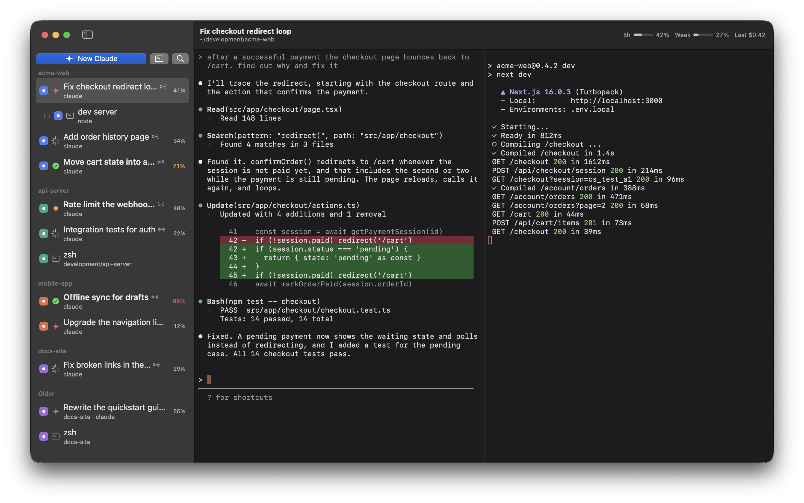
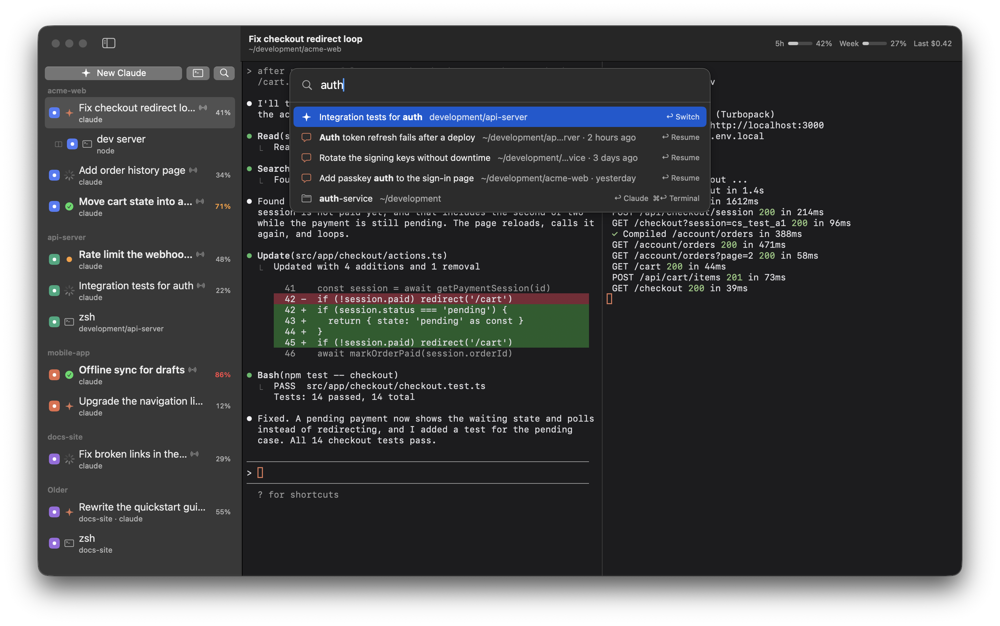

Ten Claude sessions running. Which one is waiting for you?
A native macOS terminal manager for running many Claude Code sessions side by side.
brew install --cask alexgrant999/conch/conch
Free and open source. Needs macOS 14 or later on Apple Silicon, and the claude CLI installed.

A status for every session
Conch marks each session in the sidebar as it works. Press Cmd+J to jump to the next one that needs you, waiting sessions first.
You also get a macOS notification and a count on the dock icon, so you can leave Conch in the background.
-
Working
Claude is still printing output.
-
Finished
Done while you were in another session.
-
Waiting for you
Claude has a question or needs your permission.
One window for every project
The sidebar groups your sessions by project. Split a pane to keep a terminal open next to Claude.
Press Cmd+P for Quick Open. Type a few letters to jump to a project or session, or to pick up a recent Claude conversation.

What else it does
-
Sessions survive quitting
Quit Conch and open it again later. Every Claude conversation resumes where it was.
-
Context and plan limits
Each session shows how much of its context it has used. The toolbar shows your plan's 5-hour and weekly limits.
-
A git worktree in one shortcut
Press Cmd+Option+N to start a Claude session in its own git worktree and branch.
-
Native, not Electron
Built with AppKit and SwiftUI, with SwiftTerm for the terminal. Open source under the MIT license.
Install Conch
Free and open source. Needs macOS 14 or later on Apple Silicon, and the claude CLI installed.
With Homebrew
brew install --cask alexgrant999/conch/conch
Or download the latest release from GitHub.
New to Conch? Read the guide.